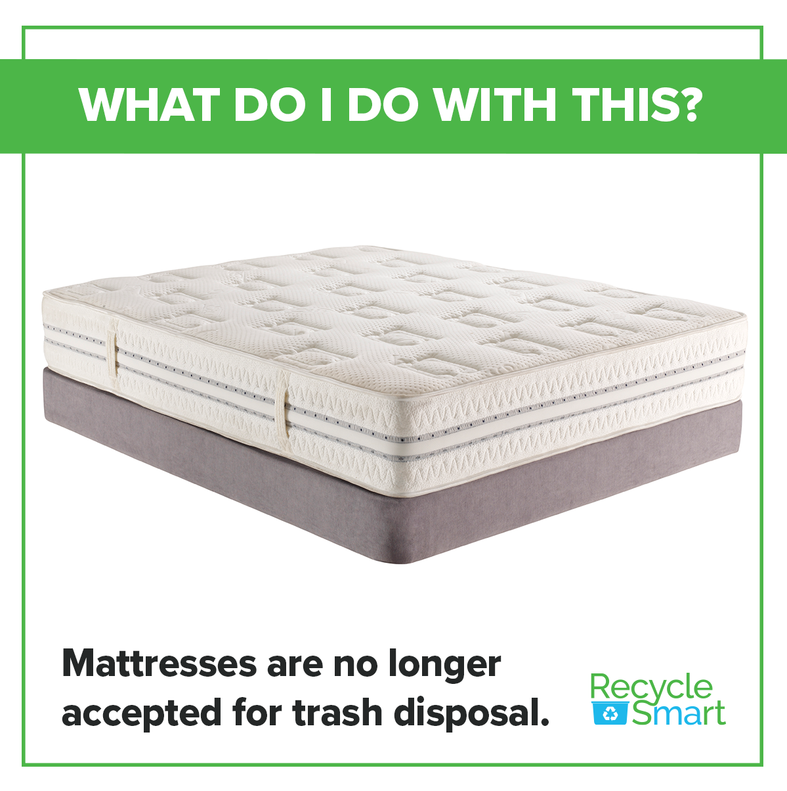
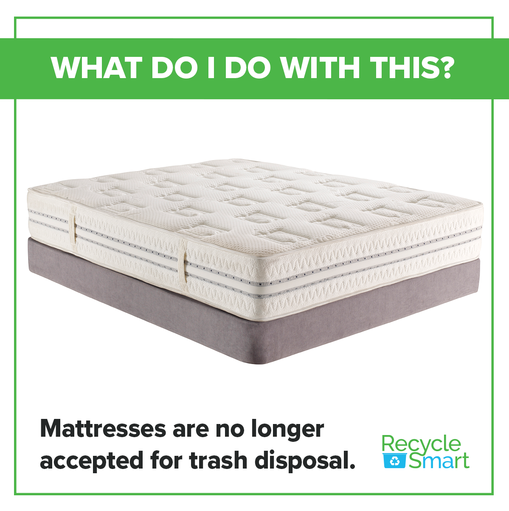

Every year, an estimated 100 billion items of clothing are manufactured, and another 92 billion are dumped into landfills and waste management services that have no way of sorting through or processing those textiles. Across Massachusetts, residents and businesses throw away 230,000 tons of textiles annually. More than 5% of waste delivered to combustion facilities were textiles, including towels, clothing, curtains, and other fabrics. Within the textiles being thrown away, around 85% of it could be recycled, reused, or reworn by someone else.
Boston Ban
In November of 2022, the city of Boston and MASSDEP (Department of Environmental Protection) implemented their own textile waste ban, restricting the amount of clothing and mattresses filling dumps in the area. This is just one step in Boston’s zero-waste plan. In the ban, textiles are categorized as “clothing, footwear, bedding, towels, curtains, fabric, and similar products, except for textiles that are contaminated with mold, bodily fluids, insects, oil, or hazardous substances.” For more information on what is considered ok to recycle and how to do so, visit https://tinyurl.com/deptextile.
 
